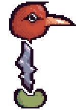

Roneth
{kind=link}

{kind=link}
Fanmade recreated sprite
Roneth is one of the pets that can be caught in Even Care. His face and body do not appear to match each other, and his head turns at a set interval of a half-second. Roneth is Toneth's half-brother.
Paul did not know how to catch Roneth until Petscop 13.
Pet description
Roneth is Toneth's baby half-brother.
Because he's younger, he gets to learn from all of Toneth's mistakes.
That's why he always looks both ways.
He doesn't get into trouble. You won't have to watch him all the time. He's good.
History

{kind=link}
Roneth is first seen in Petscop 1. He is found in a narrow room, referred to as "Roneth's room." The code on the note says it must be entered in Roneth's room.
When Roneth is approached, he moves at a fixed distance away from the guardian. When Roneth nears the end of the room, he moves upwards instead of further back. Walking away causes Roneth to come back. Roneth's method of capture is shown in Petscop 13. The player must get the bucket from Wavey and Randice's room and bring it to Roneth's room. From there, the bucket must be pushed forwards until Roneth is above it. Walking back causes him to get stuck in the bucket, so the player may collect him.
Roneth's method of capture is also used for the teal tool; a symbol block near the teal tool has the same symbol as the background of Roneth's room.
| People | Paul · Belle · Carrie · Marvin · Rainer · Anna · Mike · Lina · Jill · Daniel |
|---|---|
| Characters | Guardian · Amber · Pen · Randice · Roneth · Toneth · Wavey · Care · Tiara |